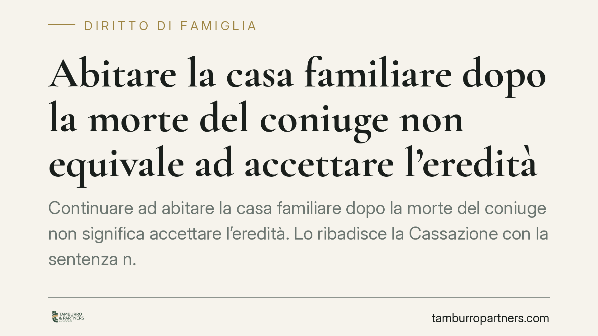

Abitare la casa familiare dopo la morte del coniuge non equivale ad accettare l'eredità
Continuare ad abitare la casa familiare dopo la morte del coniuge non significa accettare l'eredità. Lo ribadisce la Cassazione con la sentenza n. 1551/2026, estendendo la tutela anche ai figli conviventi. Una pronuncia rilevante per chi teme di ereditare debiti solo per aver mantenuto la propria residenza.

Il caso
Una società creditrice agiva nei confronti del coniuge superstite sostenendo che questi, continuando ad abitare la casa familiare dopo la morte del partner, avesse compiuto un atto di possesso dei beni ereditari. Da qui, secondo la creditrice, sarebbe scattata l'accettazione tacita dell'eredità, con conseguente responsabilità per i debiti del defunto.
Il Tribunale di Siracusa e la Corte d'Appello di Catania avevano offerto risposte non allineate. La Corte di Cassazione, Sezione II, con la sentenza n. 1551/2026, ha fissato un principio netto: la permanenza nell'abitazione familiare non costituisce, di per sé, condotta idonea a far presumere l'accettazione dell'eredità.
Inquadramento normativo
Due le disposizioni al centro della decisione.
L'art. 485 del Codice civile disciplina il chiamato all'eredità che si trovi nel possesso dei beni ereditari: se non redige l'inventario entro tre mesi dall'apertura della successione, viene considerato erede puro e semplice. Ciò significa rispondere dei debiti del defunto anche con il proprio patrimonio personale. La norma presuppone, però, un rapporto materiale con i beni del defunto che vada oltre la semplice presenza fisica.
L'art. 540, comma 2, del Codice civile riconosce al coniuge superstite il diritto di abitazione sulla casa adibita a residenza familiare. Si tratta di un diritto proprio, che sorge automaticamente al momento della morte e che non deriva dall'assunzione della qualità di erede.
La Cassazione collega i due profili: chi resta nella casa familiare esercita un diritto autonomo — quello di abitazione — e non pone in essere un atto di gestione o possesso dei beni ereditari. Manca, quindi, il presupposto per applicare l'art. 485 c.c.
Il principio esteso ai figli conviventi
L'elemento più significativo della pronuncia riguarda l'estensione della tutela. La Corte chiarisce che anche i figli conviventi che continuano ad abitare l'immobile non compiono, per ciò solo, un atto di accettazione tacita.
La ragione è coerente: la continuità abitativa risponde a un'esigenza di vita quotidiana e di stabilità familiare, non a una volontà di appropriarsi del patrimonio ereditario. Interpretare diversamente significherebbe penalizzare chi, dopo un lutto, semplicemente non cambia casa.
Implicazioni pratiche
La decisione offre certezza a una situazione molto comune. Dopo la morte di un familiare, chi resta nell'abitazione teme spesso di essere considerato erede automaticamente, con l'onere di rispondere di eventuali debiti.
La sentenza riduce questo timore, ma non lo elimina. Restano infatti rilevanti altri comportamenti che possono integrare accettazione tacita: pagare i debiti del defunto con fondi ereditari, disporre dei beni, incassare crediti, promuovere azioni giudiziarie che presuppongano la qualità di erede.
Attenzione anche al fattore tempo. Il chiamato che voglia limitare la propria responsabilità dispone di strumenti precisi — l'inventario e l'accettazione con beneficio d'inventario — che vanno attivati nei termini di legge. La sola permanenza in casa non sostituisce queste scelte formali.
Cosa fare in concreto
- Distinguete la vostra posizione: chiarite fin da subito se agite come titolari del diritto di abitazione o come chiamati all'eredità. Sono profili diversi con conseguenze diverse.
- Non toccate il patrimonio ereditario prima di aver deciso se e come accettare. Evitate di incassare crediti, vendere beni o pagare debiti del defunto attingendo ai suoi fondi.
- Valutate l'accettazione con beneficio d'inventario se sospettate l'esistenza di debiti: tiene separato il patrimonio ereditario da quello personale.
- Rispettate i termini: la redazione dell'inventario e le scelte sull'eredità sono soggette a scadenze precise. Un ritardo può trasformarvi in eredi puri e semplici.
- Documentate la vostra situazione abitativa, soprattutto se convivevate con il defunto, per dimostrare l'esercizio di un diritto autonomo.
La sentenza rappresenta un punto fermo, ma ogni successione presenta particolarità che meritano una valutazione specifica prima di compiere qualsiasi atto.
---
*Contributo informativo a cura di Tamburro & Partners - Avv. Giuseppe Tamburro. Non costituisce parere legale.*
Ogni famiglia ha il suo equilibrio.
Separazione, divorzio, affidamento, assegno: se vuoi un confronto riservato su una specifica situazione, scrivi allo studio. Ti rispondiamo entro un giorno lavorativo.